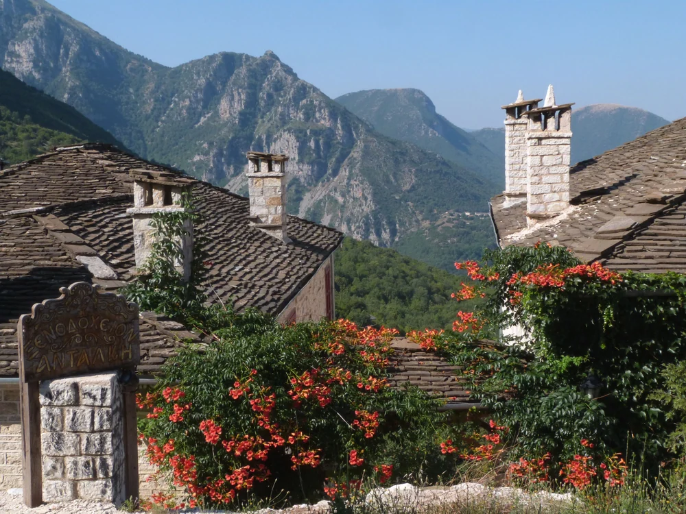
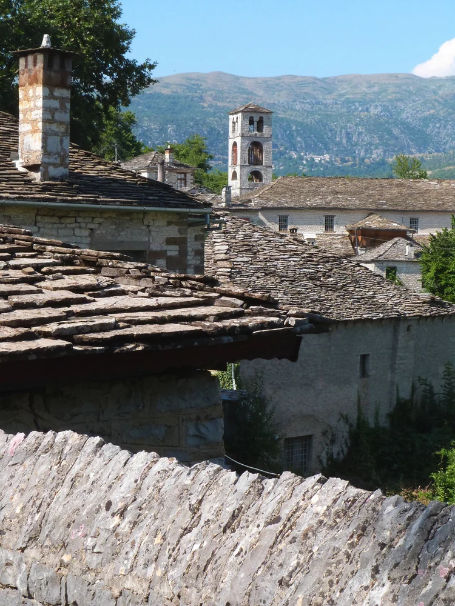
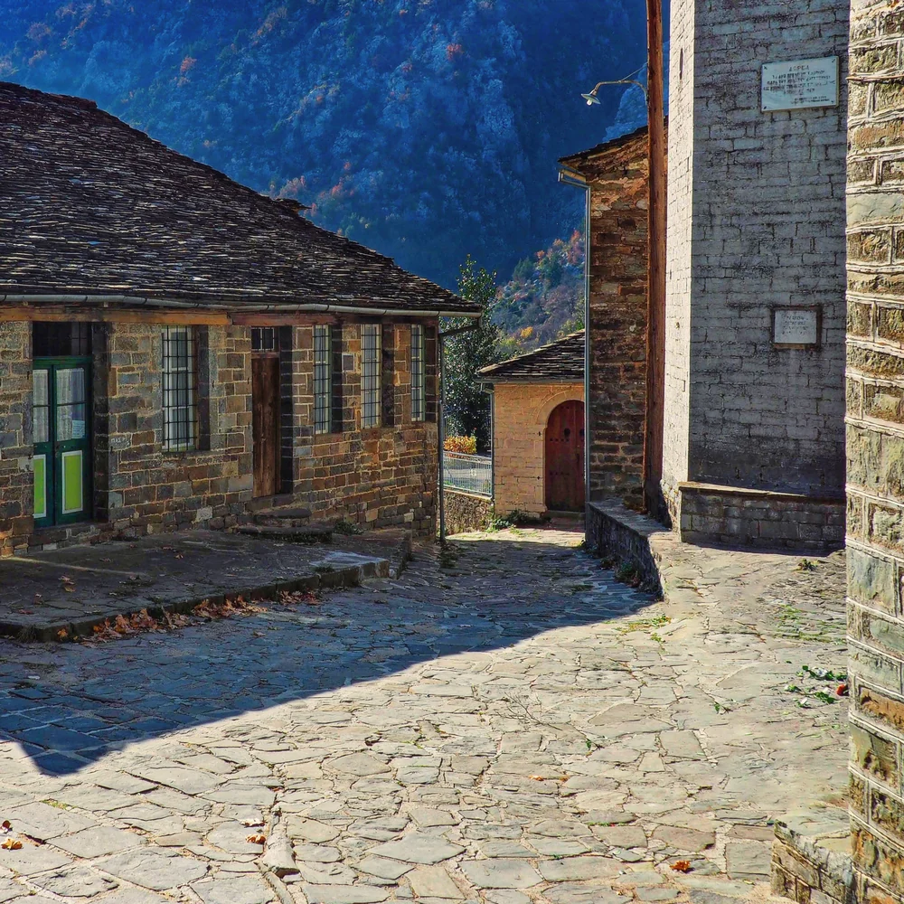
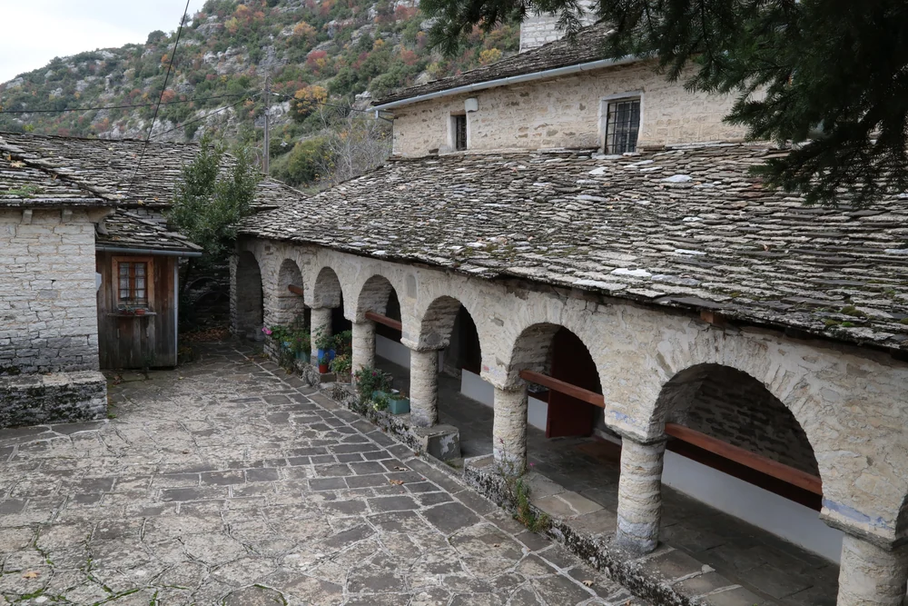
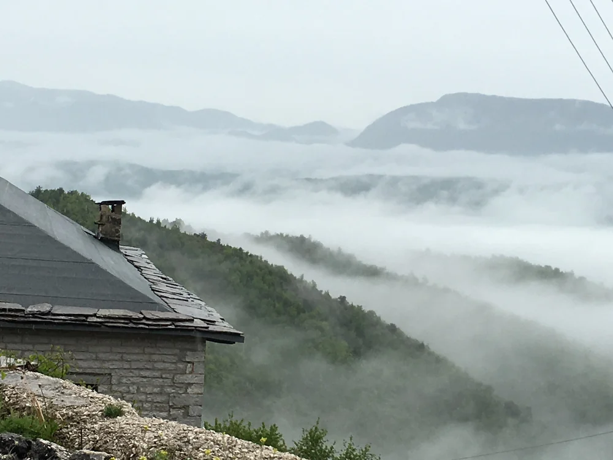
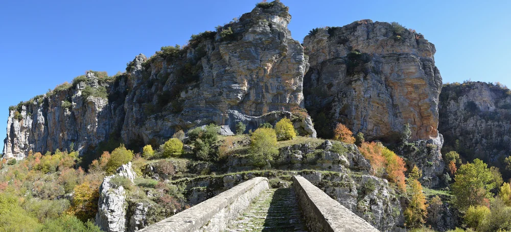
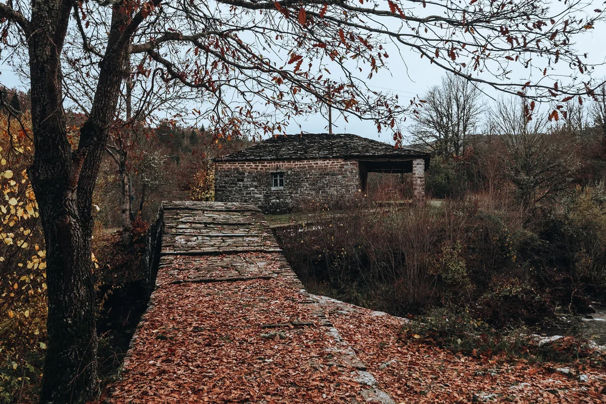
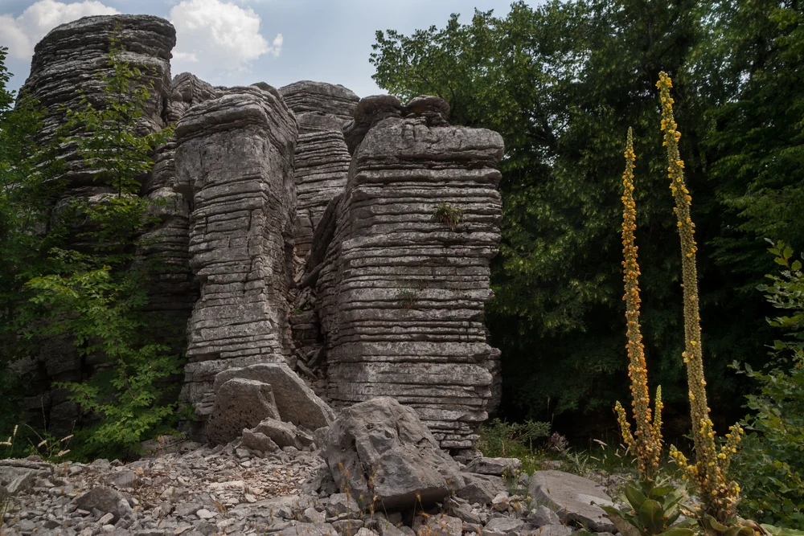
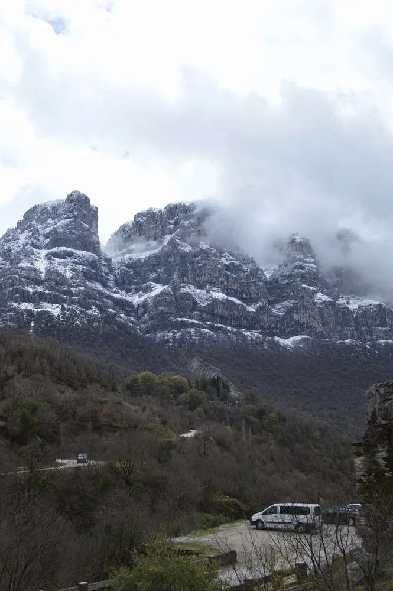
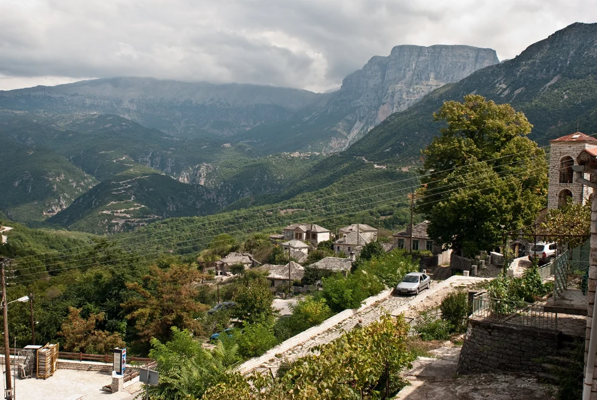

Η γη της Πίνδου →
Φωτ. Nick Giatrakis · CC BY-SA 4.0
Στέγες, κατώφλια και περάσματα. Ένας τόπος που αποκαλύπτεται με το περπάτημα.

Το Καλογερικό, ή γεφύρι του Πλακίδα, κοντά στους Κήπους. Τα τρία τόξα ακολουθούν τον ρυθμό του νερού.
Πρώτα ξεχωρίζουν οι στέγες. Ύστερα ένα παράθυρο, η αυλή, το λιθόστρωτο που χάνεται πίσω από τον τοίχο. Στο Ζαγόρι, η πέτρα ενώνει το σπίτι με το βουνό και το χωριό με το επόμενο πέρασμα. Αυτή η διαδρομή ακολουθεί τις μικρές αποστάσεις: από το κατώφλι στην πλατεία, από την πλατεία στο γεφύρι, από το γεφύρι ξανά στον ανοιχτό ορίζοντα.
Τα χωριά αποκτούν τον χαρακτήρα τους και από τον τρόπο που στέκονται μαζί τα σπίτια: στις πλαγιές, γύρω από τον κοινό χώρο, κοντά στον δρόμο που τα συνδέει.

Στέγες, καμινάδες και ανθισμένες αυλές στο Πάπιγκο. Πίσω τους, το βλέμμα ανοίγεται στις πλαγιές του βουνού.

Στέγες από πέτρα στο Δίλοφο. Η ίδια ύλη ενώνει το σπίτι με τον γύρω ορεινό τόπο.

Δρομάκι στο Τσεπέλοβο: λιθόστρωτο, κατώφλια και σκιά, στην κλίμακα του ανθρώπου που περπατά.


Ομίχλη γύρω από το Τσεπέλοβο. Οι πλαγιές χάνονται, οι στέγες μένουν για λίγο στο προσκήνιο.
Το γεφύρι και το λιθόστρωτο ήταν μέρος της καθημερινής μετακίνησης. Σήμερα κρατούν ακόμη τη χειρονομία του περάσματος: το πού πάτησε κάποιος για να φτάσει απέναντι.

Η γραμμή του γεφυριού οδηγεί το βλέμμα προς τον βράχο. Η φωτογραφία κρατά μαζί τη διαδρομή και το τοπίο της.

Φθινοπωρινά φύλλα στο γεφύρι του Μύλου, κοντά στους Κήπους. Το πέρασμα συνεχίζεται επάνω στο λιθόστρωτο.
Η ίδια ματιά που στέκεται σε μια στέγη συναντά πιο πέρα τον γυμνό βράχο. Οι οικισμοί παραμένουν δεμένοι με τη μορφή και την κλίμακα του γύρω τοπίου.

Το Πέτρινο Δάσος κοντά στο Μονοδένδρι. Οριζόντιες στρώσεις βράχου σχηματίζουν ένα διαφορετικό είδος αρχιτεκτονικής.

Οι ορεινοί όγκοι επάνω από το Πάπιγκο. Το χωριό και το βουνό μοιράζονται το ίδιο κάδρο.

Η Γκαμήλα από την Αρίστη. Πριν ανοίξει ο ορίζοντας, το βλέμμα περνά από τις στέγες του χωριού.
Οι φωτογραφίες αποδίδουν συγκεκριμένους οικισμούς και τοπία. Οι σύντομες λεζάντες ξεχωρίζουν όσα τεκμηριώνει η πηγή από την περιγραφή της εικόνας.
Τα ονόματα των φωτογράφων και οι άδειες χρήσης συνοδεύουν κάθε εικόνα. Έγινε προσαρμογή μεγέθους και μετατροπή σε WebP, χωρίς τεχνητή ανακατασκευή ή επέμβαση στο περιεχόμενο. Η προβολή πλήρους οθόνης δείχνει ολόκληρη τη φωτογραφία.